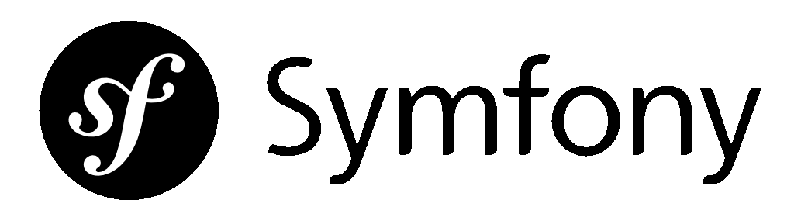
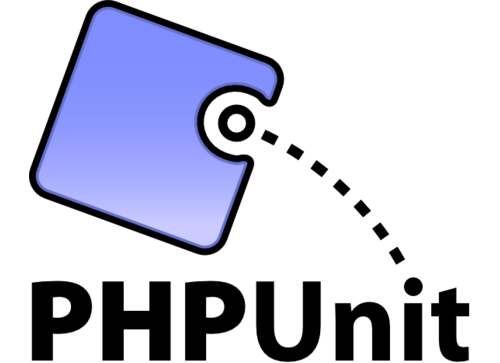

Test automatici e refactoring
Come non aver paura del proprio codice
By Alessandro Lai / @AlessandroLai
Presentazione Facile.it - 13 novembre, UniCA
Mi presento
- Alessandro Lai
- Studente UniCA 2005-2010
- Lezioni AMM 2010 e 2011
- C++ developer a Cagliari...
-
PHP developer @ Facile.it
da un anno e mezzo
Perché ho cambiato?
Volevo imparare:
- Test automatici
- Test Driven Development
- Continuous Integration
- Etc. ...
Prima di iniziare...
Un po' di presentazioni necessarie
Chi conosce...
Chi conosce...
?
Chi conosce...
?
Chi conosce...
?
Chi conosce...
S.O.L.I.D.
?
Test automatici
Dovreste aver già visto qualcosa (JUnit?) in merito
Perché testare il proprio codice?
- Per evitare bug stupidi
- Per "fidarci" di più
-
Quando ci sfugge lo stesso un bug,
per avere un test di regressione - ... e per fare TDD
Test Driven Development
Argomento troppo vasto per stasera...
- Metodologia di sviluppo (extreme programming)
- Prima il test, poi il codice
-
Si basa su un ciclo
- Red (test che fallisce)
- Green (test che passa)
- Refactor
Oggi vedremo...
Object calisthenics
Metodi per scrivere del codice più "bello"
Cosa sono?
Cal • is • then • ics - /ˌkaləsˈTHeniks/
- Dal greco, "esercizi ginnici"
-
Esercizi di programmazione ripetibili,
piccole buone pratiche - Formalizzati in "regole"
Cosa sono?
Cal • is • then • ics - /ˌkaləsˈTHeniks/
-
Inventati per il Java da Jeff Bay,
nel suo libro The ThoughWorks Anthology -
Adattati per il PHP da Raphael Dohms,
per il talk Your code sucks, let's fix it! -
Anche la leggibilità è importante,
bastano piccoli trucchi - Altre aggiunte dal libro The Art of Readable Code
Perché usare i calisthenics?
- Per avere codice testabile
- Per avere codice leggibile
- Per avere codice manutenibile
-
Per avere codice riutilizzabile
-
Per avere un punto di partenza semplice
nello scrivere codice bello ed elegante - Per sviluppare il vostro "sesto senso"
Esercizi, non regole
OC #1
Usare un solo livello di indentazione
function validateProducts($products)
{
// Check to make sure that our valid fields are in there
$requiredFields = ['price', 'name', 'description', 'type'];
$valid = true;
foreach ($products as $rawProduct) {
$fields = array_keys($rawProduct);
foreach ($requiredFields as $requiredField) {
if (!in_array($requiredField, $fields)) {
$valid = false;
}
}
}
return $valid;
}
function isValidProduct($product)
{
$requiredFields = ['price', 'name', 'description', 'type'];
$fields = array_keys($rawProduct);
foreach ($requiredFields as $requiredField) {
if ( ! in_array($requiredField, $fields)) {
return false;
}
}
return true;
}
function validateProductList($products)
{
$validProducts = array_filter($products, 'isValidProduct');
return (count($products) == count($validProducts));
}
Vantaggi
- Aumenta la frammentazione dei metodi
-
Principio di "singola responsabilità"
(lettera S del SOLID) - Facilita il riuso del codice
OC #2
Non usare l'else
public function createPost($request)
{
$entity = new Post();
$form = new MyForm($entity);
$form->bind($request);
if ($form->isValid()){
$repository = $this->getRepository('MyBundle:Post');
if (!$repository->exists($entity) ) {
$repository->save($entity);
return $this->redirect('create_ok');
} else {
$error = "Post Title already exists";
return array('form' => $form, 'error' => $error);
}
} else {
$error = "Invalid fields";
return array('form' => $form, 'error' => $error);
}
}
public function createPost($request)
{
$entity = new Post();
$form = new MyForm($entity);
$form->bind($request);
if ($form->isValid()){
$repository = $this->getRepository('MyBundle:Post');
if (!$repository->exists($entity) ) {
$repository->save($entity);
return $this->redirect('create_ok');
} else {
$error = "Post Title already exists";
return array('form' => $form, 'error' => $error);
}
} else {
$error = "Invalid fields";
return array('form' => $form, 'error' => $error);
}
}public function createPost($request)
{
$entity = new Post();
$repository = $this->getRepository('MyBundle:Post');
$form = new MyForm($entity);
$form->bind($request);
if ( ! $form->isValid()) {
return array('form' => $form, 'error' => 'Invalid fields');
}
if ($repository->exists($entity)) {
return array('form' => $form, 'error' => 'Duplicate post title');
}
$repository->save($entity);
return $this->redirect('create_ok');
}Vantaggi
- Evita duplicazione del codice
- Migliore leggibilità ("happy path")
- Riduce complessità ciclomatica
OC #3
Incapsulare
primitive e stringhe
(non sempre)
$component->repaint(false);
class UIComponent
{
//...
public function repaint($animate = true)
{
//...
}
}
class UIComponent
{
//...
public function repaint( Animate $animate )
{
//...
}
}
class Animate
{
public $animate;
public function __construct( $animate = true )
{
$this->animate = $animate;
}
}
$component->repaint( new Animate(false) );Vantaggi
- Aiuta nell'individuare cosa deve diventare un oggetto
- Aiuta l'autocompletamento nell'IDE
- Incapsula le operazioni (ancora la S del SOLID)
OC #4
Una sola -> per linea
$this->base_url = $this->CI->config->site_url().'/'.$this->CI->uri->segment(1).$this->CI->uri->slash_segment(2, 'both');
$this->base_uri = $this->CI->uri->segment(1).$this->CI->uri->slash_segment(2, 'leading');
$this->getCI()->getUriBuilder()->getBaseUri(‘leading’);
Eccezione: fluent interface
$box->setHeight(2.5)
->setWidth(6.0)
->setDepth(2.0)
->setColor(new Color(255, 0, 0));
$this->get('security.context')->getToken()->getUser();
Vantaggi
- Leggibilità
- Più facile scrivere test
- Più facile fare debug
- Legge di Demetra
OC #5
NON abbreviare
if($sx >= $sy) {
if ($sx > $strSysMatImgW) {
$ny = $strSysMatImgW * $sy / $sx;
$nx = $strSysMatImgW;
}
if ($ny > $strSysMatImgH) {
$nx = $strSysMatImgH * $sx / $sy;
$ny = $strSysMatImgH;
}
} else {
if ($sy > $strSysMatImgH) {
$nx = $strSysMatImgH * $sx / $sy;
$ny = $strSysMatImgH;
}
if($nx > $strSysMatImgW) {
$ny = $strSysMatImgW * $sy / $sx;
$nx = $strSysMatImgW;
}
}
function processResponseHeadersAndDefineOutput($response) { ... }
function getPage($data) { ... }
function execute() { ... }
$tr->process(“site.login”);
$translatorService
Vantaggi
- Comunicazione più completa tra programmatori
- Maggiore manutenibilità
- Indica spesso problemi sottostanti
OC #6
Mantenere le classi brevi
200 righe per classe
10 metodi per classe
15 classi per package\cartella
Vantaggi
- Singola responsabilità (si, ancora la S!)
- Metodi chiari e concisi
- Package\namespace di dimensioni ridotte
- Evita cartelle-calderone
OC #7
Usare solo
da due a cinque
variabili d'istanza
class MyRegistrationService
{
protected $userService;
protected $passwordService;
protected $logger;
protected $translator;
protected $entityManager;
protected $imageCropper;
// ...
}
Vantaggi
- Classi con meno dipendenze
- Test più facili (meno mock necessari)
OC #8
Usare collezioni "pure"
Una collezione di oggetti deve solo essere una collezione:
- Accesso sequenziale e/o a chiave
- Iteratore
- Funzioni aggiuntive (sort, map, filter...)
Alcuni linguaggi o librerie permettono di avere collezioni di oggetti della stessa classe
Vantaggi
- Forniscono le operazioni sulle collezioni
- In PHP abbiamo le classi SPL
- Diventa più facile unire collezioni tra loro
OC #9
Non usare accessors (getters/setters)
[non in PHP]
class ScoreModel
{
private $score;
public getScore()
{
if ( ! is_null($this->score)) {
return $this->score;
} else {
return "Score not available";
}
}
public setScore($score)
{
if ($score < 0) {
throw new InvalidScoreException()
}
$this->score = $score;
}
}
Vantaggi
- Operazioni iniettate
- Incapsulamento delle trasformazioni
OC #10 (bonus!)
Documentare
il proprio codice
// controllo se $overall_pref è stata impostata a void
if ($overall_pref == 'void')
// implode l'array di selezioni del gruppo tre in una stringa,
// così che poi possa essere successivamente trasferita in un
// database alla fine della pagina
$groupthree = implode($groupthree_array, "\n\r");
$priority = isset($event['priority']) ? $event['priority'] : 0;
if (!isset($event['event'])) {
throw new \InvalidArgumentException(...));
}
if (!isset($event['method'])) {
$event['method'] = 'on'.preg_replace(array(
'/(?<=\b)[a-z]/ie',
'/[^a-z0-9]/i'
), array('strtoupper("\\0")', ''), $event['event']);
}
$definition->addMethodCall(
'addListenerService',
array() // ...
);
/**
* Checks whether an element is contained in the collection.
* This is an O(n) operation, where n is the size of collection.
*
* @todo implement caching for better performance
* @param mixed $element The element to search for.
* @return boolean TRUE if the collection contains the element,
* or FALSE.
*/
function contains($element);
Vantaggi
- Documentazione automatica delle API
- Trasmissione dei vostri ragionamenti
- Si evitano fraintendimenti
Le "regole"
- Usare un solo livello di indentazione
- Non usare l'else
- Incapsulare primitive e stringhe (non sempre)
- Una sola punto -> per riga
- NON abbreviare
- Mantenere le classi brevi
-
Usare solo da due a cinque
variabili d'istanza - Usare collezioni "pure"
- Non usare accessors (getters/setters)
- Documentare il proprio codice
Kata:
punteggi del tennis
Regole del tennis
- Un game viene vinto dal primo che fa almeno 4 punti e due in più dell'avversario
-
I nomi dei punti da 0 a 3 sono:
"Love", "Fifteen", "Thirty" e "Forty" - Se c'è un pareggio sotto i 3 punti, si aggiunge "-all"
- Se c'è un pareggio e sono stati fatti almeno 3 punti, si dice "Deuce"
- Dopo il "deuce", il primo che segna ottiene un "Advantage"
Cosa abbiamo a disposizione
-
Il repository di oggi è disponibile in tanti linguaggi
-
Noi oggi ci eserciteremo sul PHP
-
Il repository contiene tre versioni funzionanti
- Abbiamo anche una suite di test!